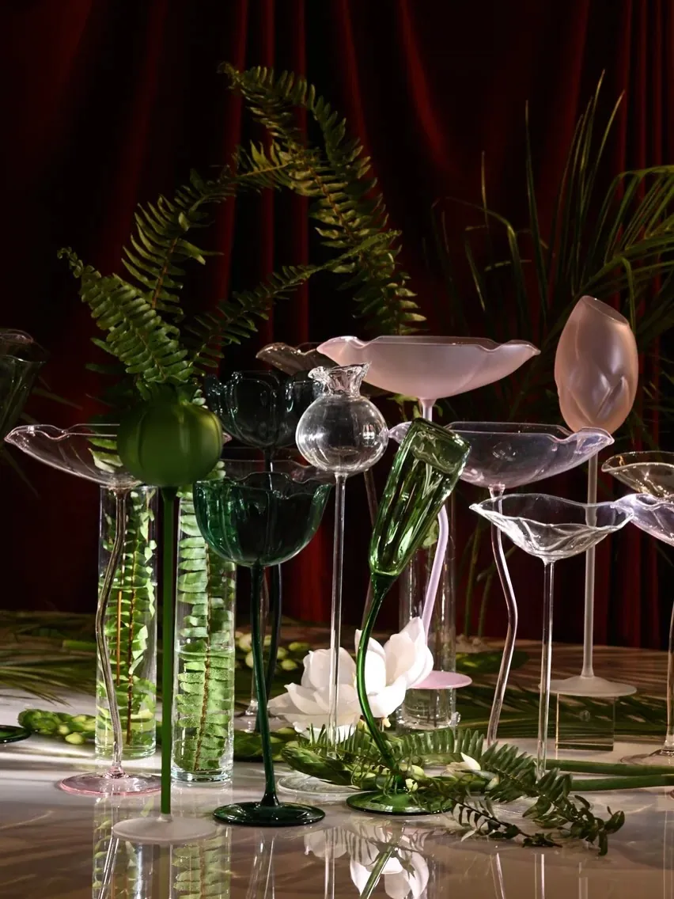
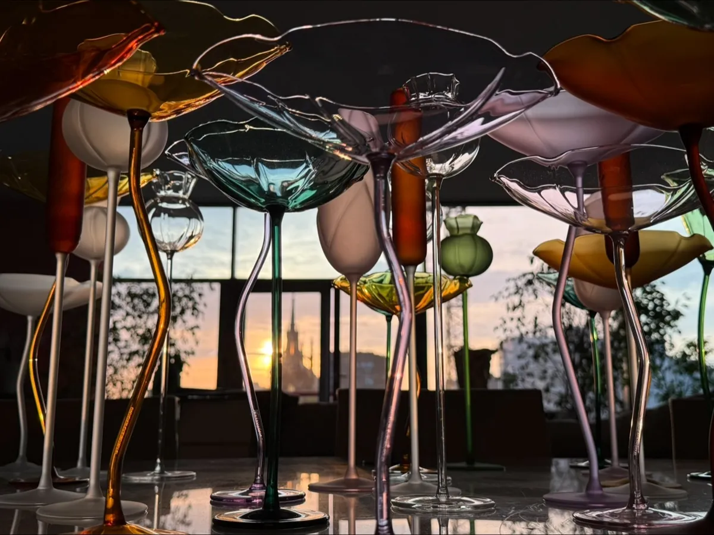
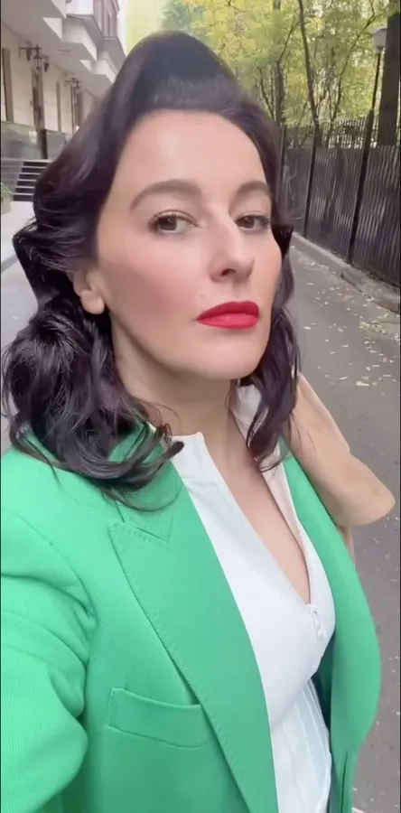
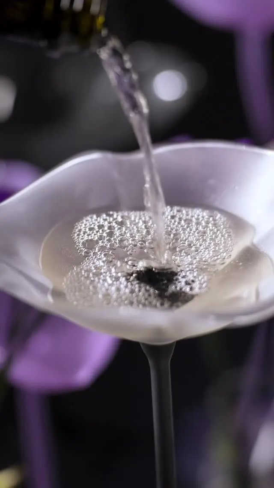
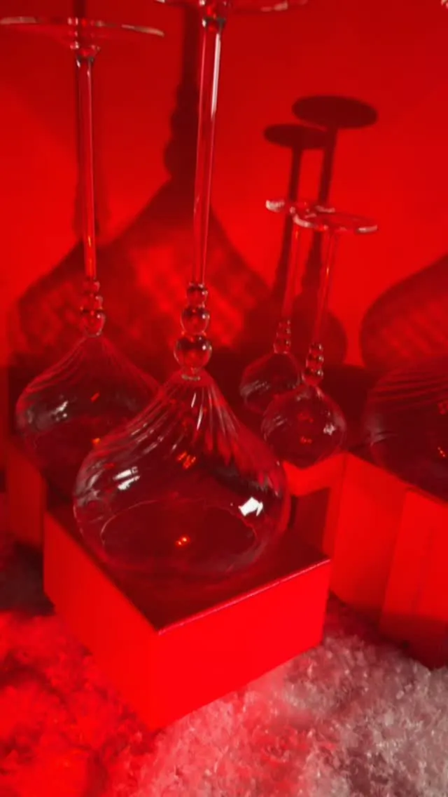
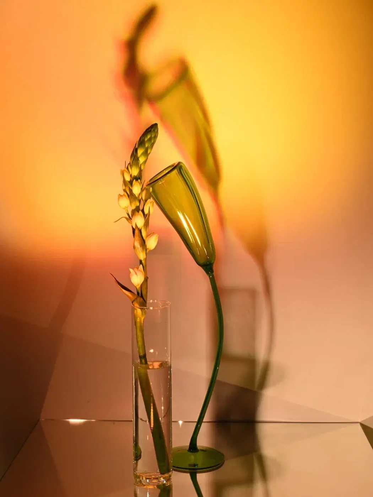
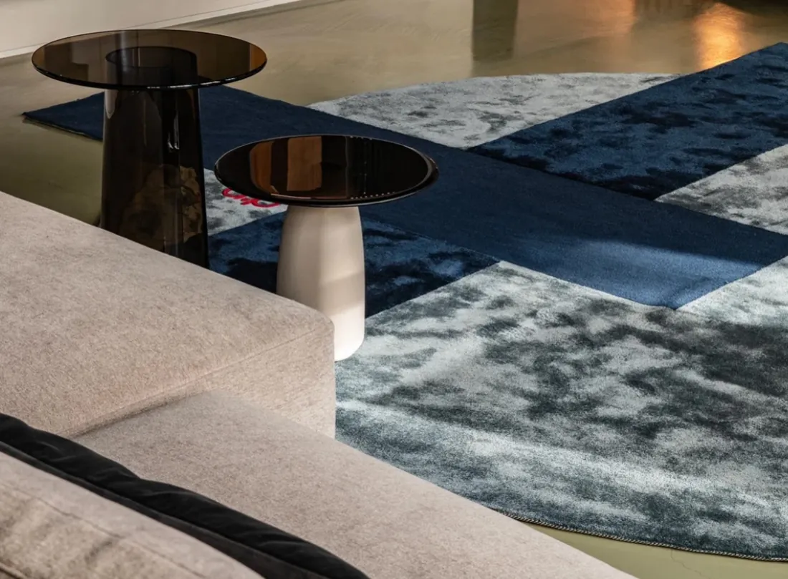
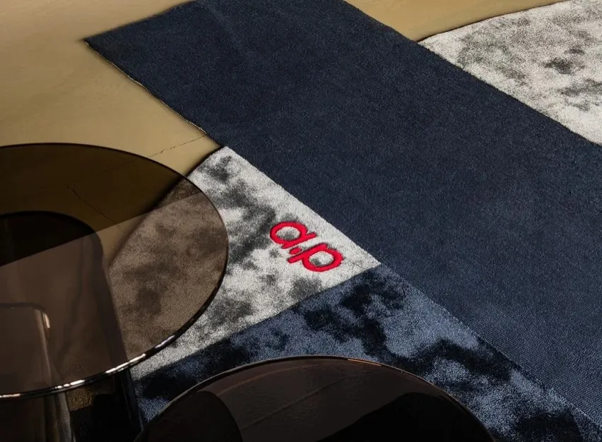
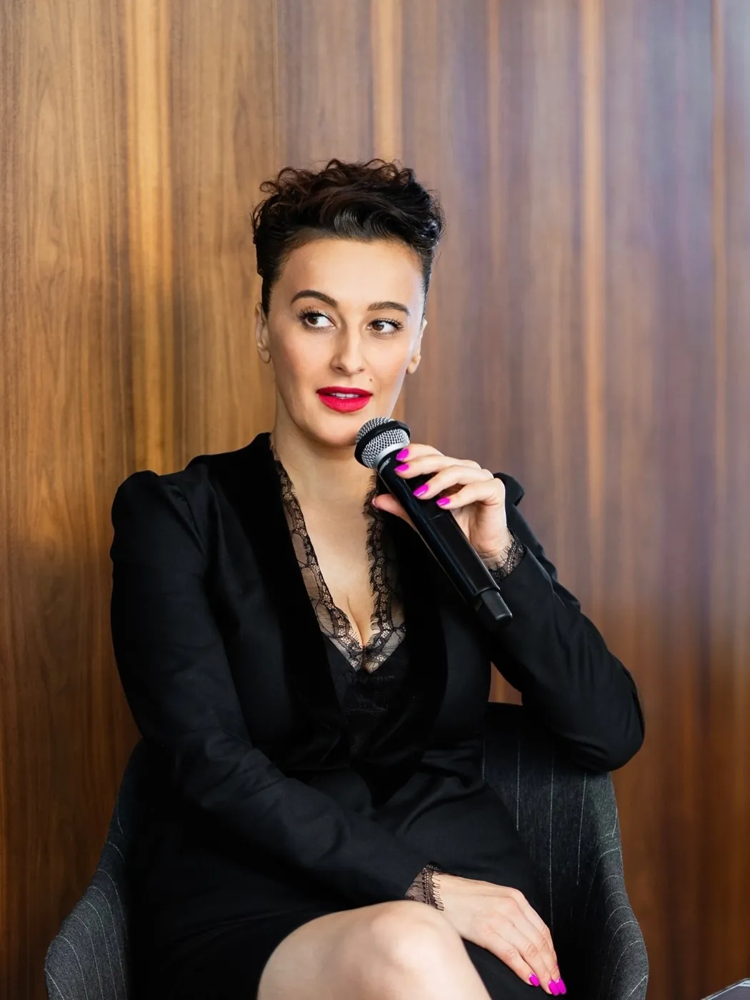

«Сон в летнюю ночь»
Каждый предмет — оживший цветок: кувшинки, маки, камыши. Бестселлер коллекции — бокал «Танцующая кувшинка».

Архитектор ресторанов и автор коллекционного стекла

Grand Café «Доктор Живаго», Beluga, Minerals и «Чароит» в отеле Wawelberg — её интерьеры. Бокалы «Танцующая кувшинка» и «Анемоны» — её стекло.
Интерьеры, в которые идут не только поесть. «Доктора Живаго» и Beluga она сама называет своими мишленовскими проектами.
Окончила архитектурный факультет Академии художеств имени Репина. Дипломный проект «Музей современного искусства» получил несколько премий и был показан в Веймаре.
«Как и в детстве, я до сих пор смотрю на мир сквозь призму цветных стёклышек и играю в „секретики“».

Каждый предмет — оживший цветок: кувшинки, маки, камыши. Бестселлер коллекции — бокал «Танцующая кувшинка».

Серия для пятизвёздочного отеля на Невском, 7: графитовые бокалы — в цвет фасада из карельского гранита, сиренево-фиолетовые — в цвет чароита.

Трио, вдохновлённое русской храмовой архитектурой.

«Моя первая и в мире тоже коллекция» — так Анастасия представила ковры, в которых живопись авангарда ложится под ноги.


